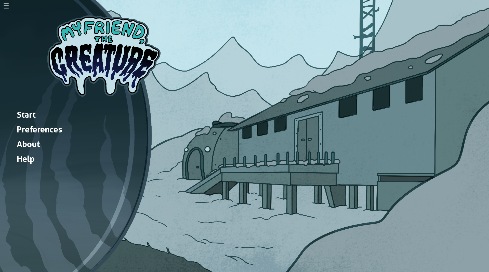

My Friend the Creature

My Friend the Creature is a 2024 point-and-click mystery game. Play as a
murderous,
shapeshifting entity, gradually picking off members of an arctic expedition.
Contributions: Sound Design/Implementation, Programming, Composition, and Writing.
Contributions: Sound Design/Implementation, Programming, Composition, and Writing.
Coalesence

Coalesence is an ongoing visual novel project, that tells the story of two
monster
hunters
on a road trip across the United States.
Contributions: Sound Design/Implementation, Programming, Composition, and Writing.
Contributions: Sound Design/Implementation, Programming, Composition, and Writing.
So Sings the Deep

The Maw is an in development rogue-like platformer. Gear up,
power up, and brave the depths. Made in collaboration with Abyss Squad.
Contributions: Sound Design/Implementation, Composition, and Writing.
Contributions: Sound Design/Implementation, Composition, and Writing.